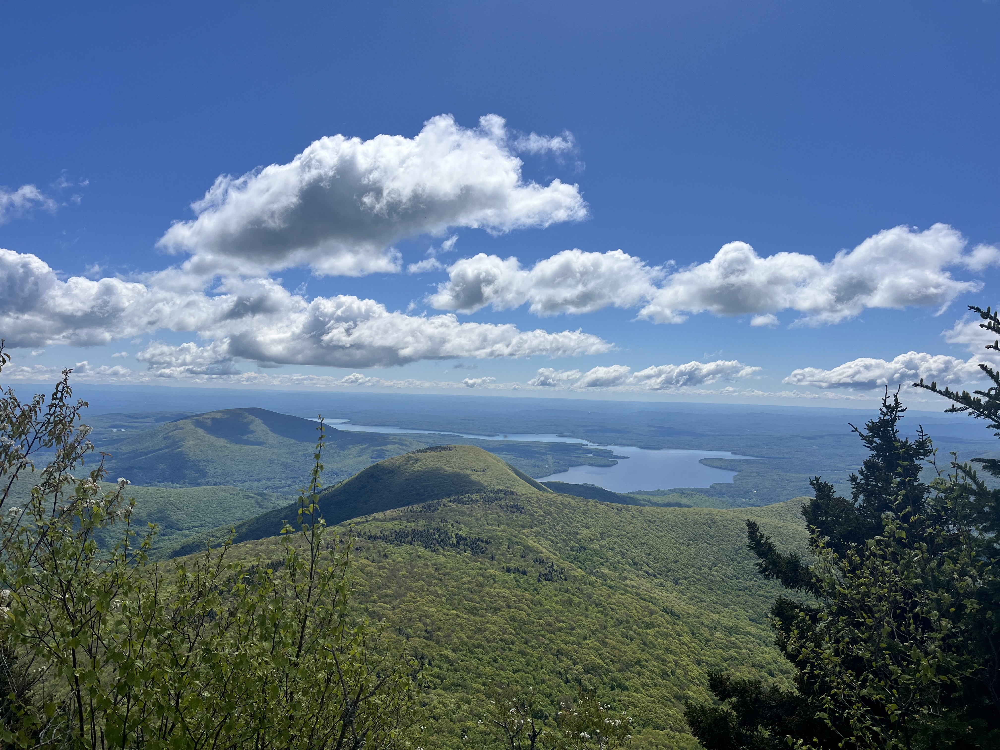
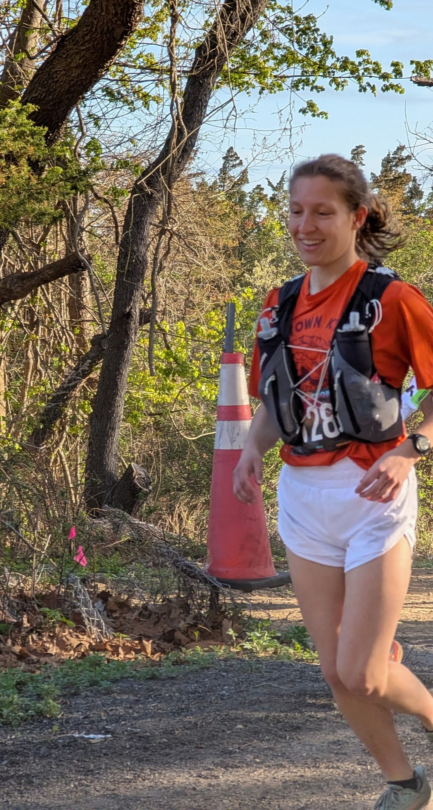

Blop
A Bluesky optimization package used for beamline operations and experimental analysis.
React
Node.js
MongoDB

Software Developer @ Brookhaven National Laboratory (NSLS-II) | Operations Research Masters Student @ Stony Brook
Hi! My name is Jessica (Jess) Moylan, and I am a software developer at the National Synchrotron Light Source II, in the Data Science and Systems Integration (DSSI) group at Brookhaven National Laboratory (BNL) in Upton, NY. I am also a graduate student at Stony Brook University studying Operations Research where I am focusing on optimization and geographic information systems.
My work focuses on developing software for use at beamlines for scientific research. When I am not at work or school, you can find me training for my next race, hiking, skiing, or exploring the outdoors. In the upcoming years, my goals include summiting the highest point in all 50 US states and completing a 100 mile race.
I want to be able to use my skills to contribute to projects that have a positive impact on the world, whether that is through scientific research and innovation or environmental safety.
A Bluesky optimization package used for beamline operations and experimental analysis.
A Python project that determines the biome of a specific location in South America using a trapizodial map and a DAG
Check out the other activities I enjoy:

A combination of documenting my progress and experiences completing the 50 highest peaks as well as other hikes
Explore My Hikes →
